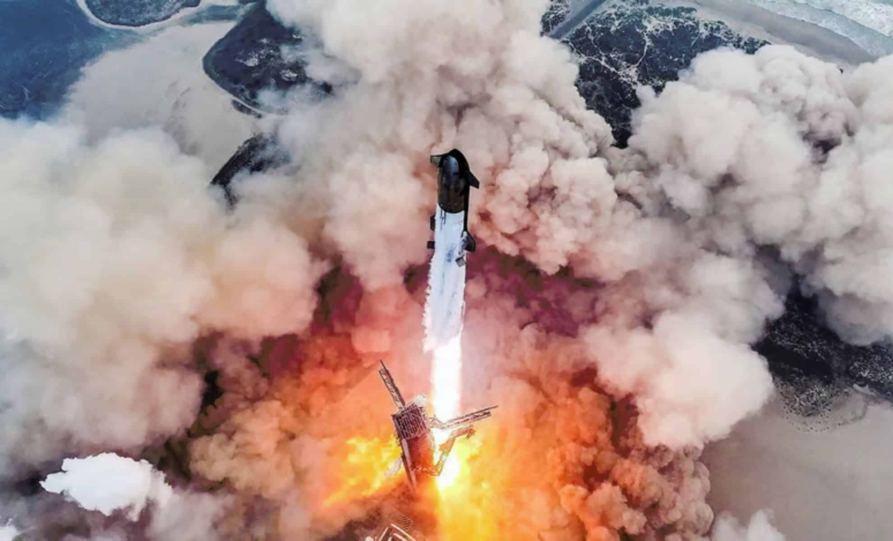

Actualités
Les images du nouveau vol test réussi de la plus grande fusée jamais construite par Elon Musk
Une prouesse visuelle au décollage
Les images du tout dernier vol test de la fusée Starship, la plus grande jamais construite par SpaceX, sont tout simplement saisissantes. Lors du décollage, le lanceur de plus de 120 m s'élance verticalement depuis la base Starbase, au Texas, entouré d'un nuage de fumée dense. Les flammes orangées jaillissent alors des 33 moteurs Raptor du booster Super Heavy, générant un spectacle puissant et impressionnant.
Une rentrée atmosphérique enveloppée de plasma
L'un des moments les plus marquants des images est celui de la rentrée du vaisseau supérieur : alors que Starship redescend vers la Terre, les caméras embarquées montrent des teintes rouges et orangées — un effet de plasma se formant autour de la fusée à cause de la chaleur intense de la friction atmosphérique. Ce phénomène, bien que dramatique visuellement, témoigne d'un retour partiellement maîtrisé.
Un atterrissage / retour maîtrisé
L'une des réussites techniques les plus impressionnantes, immortalisée en images, est le rattrapage du booster Super Heavy par des bras mécaniques fixés à la tour de lancement, souvent baptisés "chopsticks" — ou "Mechazilla" dans le jargon de SpaceX. Ce type de manœuvre, qui semblait relever de la science-fiction, a été capturé dans un moment de calme, presque solennel, quand le booster revient pour être "attrapé" à quelques centaines de mètres de sa plateforme de lancement.
Une mission en deux temps : ascension et splash-down
Les images montrent aussi bien l'ascension que la séparation des deux étages de la fusée : une fois le booster décroché, la partie Starship continue vers la haute altitude tandis que le Super Heavy commence sa manœuvre de retour. Le vaisseau supérieur, quant à lui, termine sa trajectoire en amerrissant dans l'océan Indien, comme prévu, confirmant ainsi un vol partiellement "réussi" selon SpaceX.
Réaction de SpaceX et portée médiatique
Malgré certains dommages subis pendant la rentrée, SpaceX a salué ce vol comme un véritable pas en avant. Les images diffusées en direct par la société ont été suivies par un large public, soulignant non seulement la prouesse technique, mais aussi la dimension spectaculaire et presque cinématographique de cette mission — un mélange d'ingénierie de pointe et d'ambition visionnaire. Elon Musk et son équipe semblent avoir gagné une nouvelle manche dans leur course vers la réutilisabilité totale, et les images de ce test offrent un aperçu tangible de leur progression vers des missions de plus grande envergure, notamment vers la Lune ou Mars.